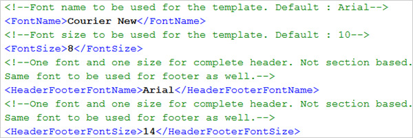
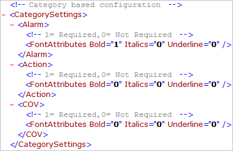

Configure Journaling Fonts
The journaling fonts are applicable only for the page printer.
- In the <PaperDetails> section of the template file, enter the font name and size within the <FontName> and <FontSize> tags.
- To set the font name and size for the header and footer: enter the font name and size within the <HeaderFooterFontName> and <HeaderFooterFontSize> tags.


NOTE:
For printing Asian characters using a page printer, you must select TrueType fonts which support Asian characters, for example, Arial Unicode MS.
You can also specify the format (bold, italics, or underline) of the printable text according to the type of generated event (Alarm, Action, or COV) in the <CategorySettings> tag. For example, if you want a bold font with no italics and underline format for all Alarm type events, complete the following steps:
- Open the Default or UL template using an editor, such as Notepad or Visual Studio.
- Navigate to the <Alarm> tag in the <CategorySettings> section.
- In <FontAttributes>, specify 1 for the Bold attribute, and 0 for Italics and Underline attributes.
- All events of type Alarm are printed with a bold format.
